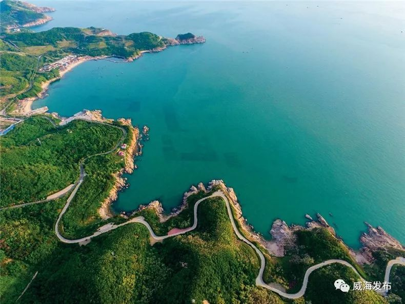
威海海岸线全景
威海是山东半岛最东端的海滨城市，三面环海，海岸线绵延近千公里。这里没有过度商业化的喧嚣，有的是干净的沙滩、清澈的海水和舒适的生活节奏。这份三天两夜的攻略，带你从历史到自然、从城市到海角，感受威海的多面魅力。
Day 1：市区经典
上午：刘公岛
刘公岛是甲午海战的主战场，也是中国近代海军的摇篮。从威海旅游码头乘船约20分钟上岛，岛上有中国甲午战争博物院、北洋海军提督署等历史遗迹，还能看到野生梅花鹿。建议预留3-4小时游览，上午早点出发避开人流。
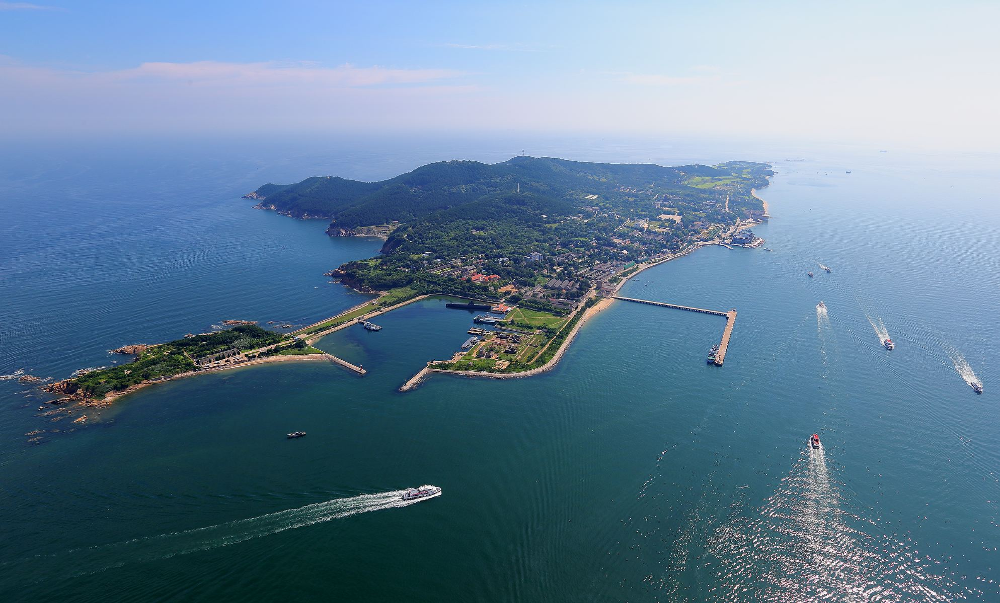
刘公岛——甲午海战纪念地
下午：海源公园 → 悦海公园
下午回到市区，前往海源公园。公园内有一座玻璃栈桥延伸入海，脚下就是碧蓝海水和礁石，天气好时海天一色，是威海市区最佳观海点之一。
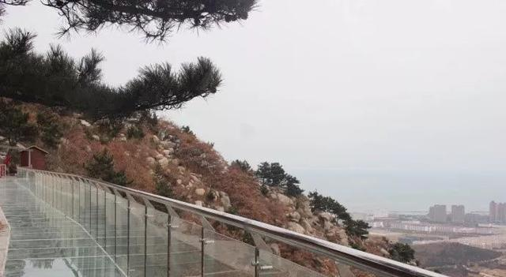
海源公园玻璃栈桥
沿海岸线继续西行即到悦海公园。公园里那座红白相间的灯塔是威海的城市地标，伫立在海岸线尽头，背景是无尽的大海，日落时分尤其出片。
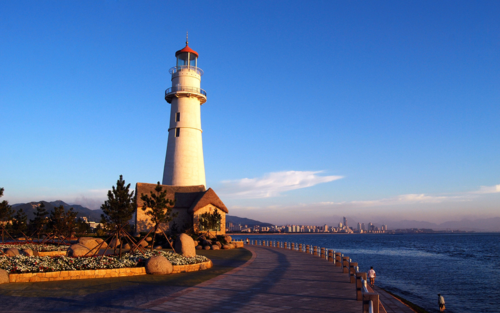
悦海公园灯塔
晚上：韩乐坊
威海与韩国隔海相望，韩国元素融入了这座城市的日常。韩乐坊是威海最集中的韩式美食街区，韩式烤肉、部队锅、炸鸡啤酒、石锅拌饭应有尽有，招牌和菜单大多中韩双语，仿佛置身首尔街头。
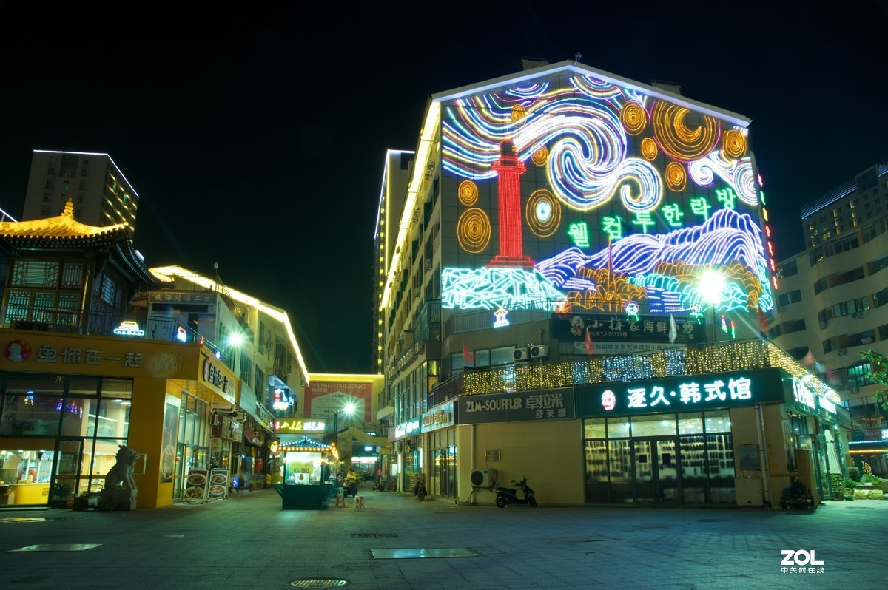
韩乐坊韩式美食街
Day 2：东部海岸线
上午：成山头（天尽头）
成山头位于荣成市，是中国大陆海岸线的最东端，古称"天尽头"。秦始皇曾两次东巡至此寻找长生不老药。站在海角的悬崖上，三面环海，海风猎猎，有种站在世界尽头的壮阔感。这里也是看日出的绝佳位置，但从威海市区开车约需1.5小时，看日出需要很早出发。
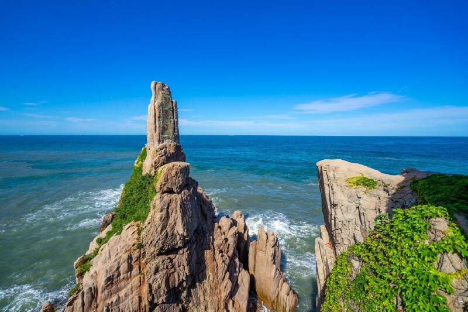
成山头——中国大陆最东端
下午：神雕山野生动物园
从成山头驱车约20分钟到达神雕山野生动物园。这是一座依山傍海的大型野生动物园，沿海岸线修建，边看动物边看海是它最大的特色。园区很大，有猛兽区、草食区、海洋动物区等，建议预留2-3小时，穿舒适的鞋。
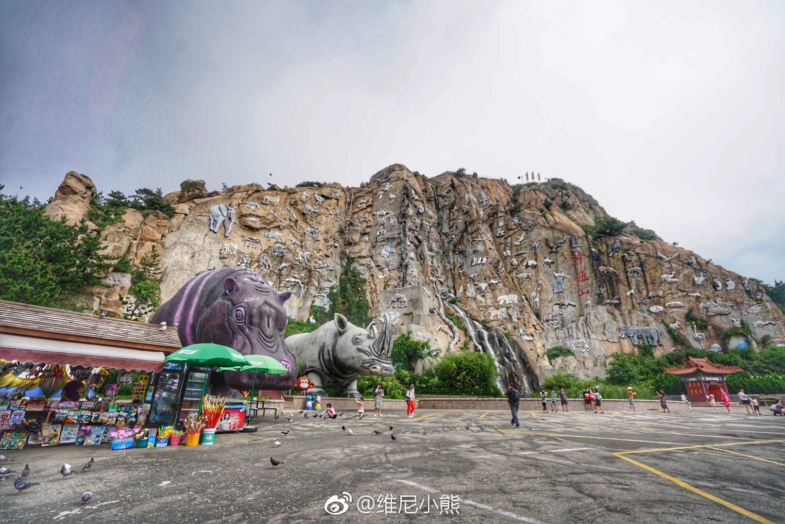
神雕山野生动物园
晚上：那香海沉船
那香海沉船是威海最出圈的网红打卡地。一艘废弃货船搁浅在海滩上，锈迹斑斑的船体与金色沙滩、落日余晖构成极具电影感的画面。日落前一小时到达最佳，光线柔和时拍照效果绝了。沉船位于那香海景区内，免费开放。
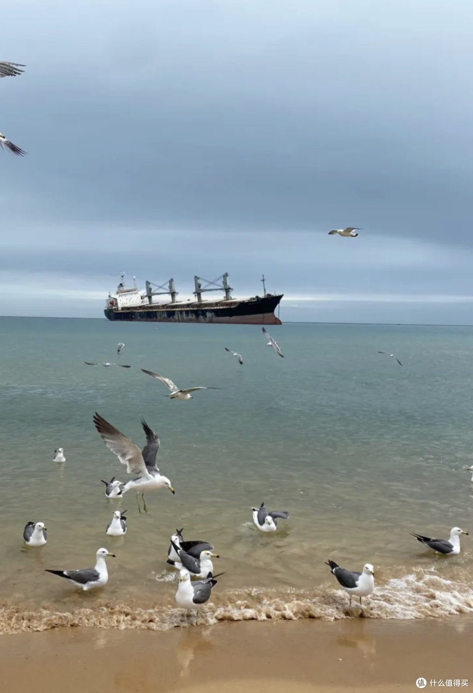
那香海沉船——日落时分最美
小贴士：那香海距市区较远（约1小时车程），建议和成山头、神雕山安排在同一天，顺路游览。
Day 3：城市海滨休闲
上午：国际海水浴场 → 火炬八街
国际海水浴场是威海最知名的沙滩，沙质细腻、海水清澈，弧形海湾两侧松林环绕。早上人少，适合踏浪散步或坐在沙滩上放空。
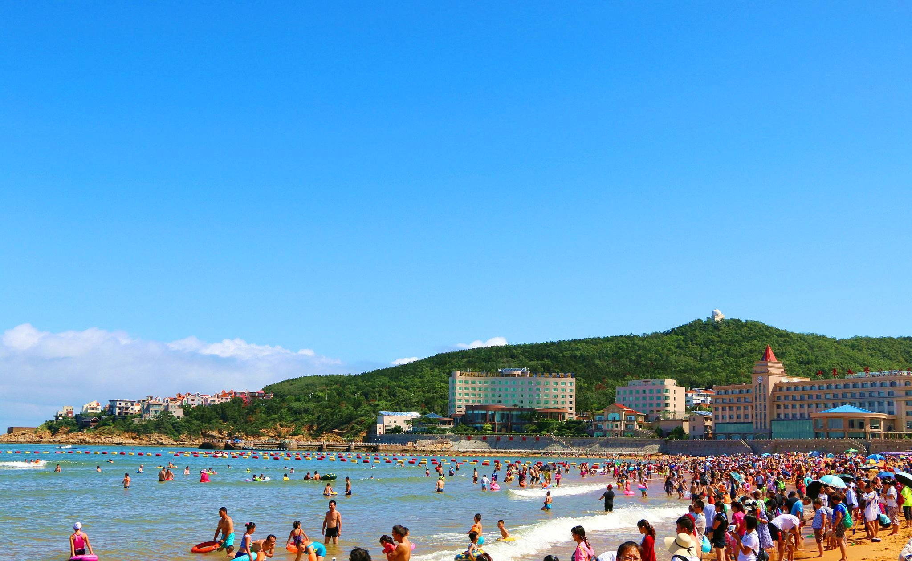
国际海水浴场
浴场旁边就是火炬八街。一条笔直的小路从山坡直通大海，两侧是彩色房屋和绿植，神似日本镰仓海岸，被称为"威海小镰仓"。站在坡顶望向海面，随手一拍就是壁纸。
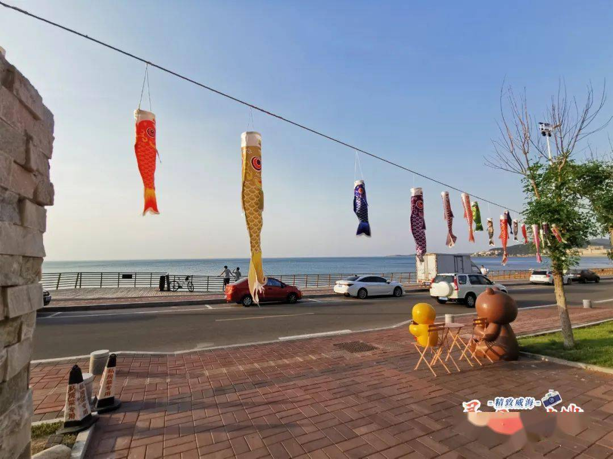
火炬八街——威海小镰仓
下午：猫头山 → 半月湾
猫头山是威海近年最火的海边栈道景点。木栈道沿着海岸礁石蜿蜒而建，一侧是峭壁松林，一侧是碧蓝大海，走在上面像是行走在海面之上。全程约2公里，沿途有多个观景平台，适合慢慢走慢慢拍。
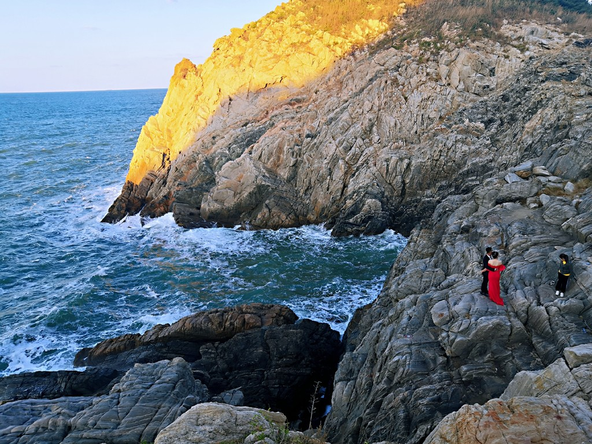
猫头山海边栈道
栈道尽头不远处就是半月湾，一个形如半月的小海湾，沙滩被礁石环抱，海水格外平静清透。在这里吹吹海风、踩踩水，为三天的威海之行画上一个悠然的句号。
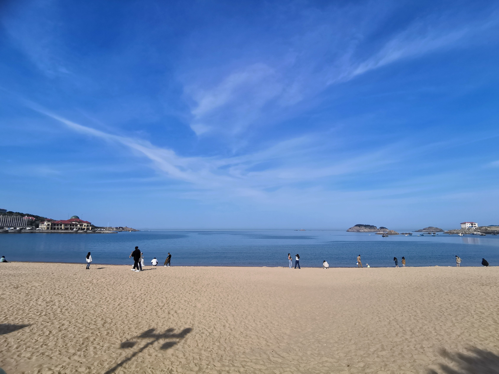
半月湾
美食推荐
- 海鲜：威海海鲜以新鲜实惠著称——鲅鱼水饺、海胆蒸蛋、爆炒海肠、清蒸梭子蟹、生蚝
- 特色小吃：海带结（威海特产）、鱼锅粑粑、地瓜面、荠菜饺子
- 韩餐：韩乐坊的韩式烤肉、部队锅、冷面，性价比超高
- 推荐餐厅：海草房渔家乐（荣成当地）、老刺身（日料海鲜）、韩味源（韩乐坊内）
住宿建议
- 市区（威海湾/海滨路附近）：靠近Day 1和Day 3景点，海景酒店选择多，交通方便
- 荣成/那香海方向：适合Day 2行程，有海边度假公寓和民宿，环境安静
- 预算参考：经济型酒店150-300元/晚，海景民宿300-500元/晚
交通指南
- 到达：威海大水泊机场（距市区约40分钟）；威海站（高铁，青岛出发约1.5小时、济南出发约3小时）
- 市内：公交线路覆盖主要景区；打车便宜（起步价7元）；推荐租车自驾，尤其是Day 2东部海岸线行程
- 建议：市区景点可公交+步行；成山头/神雕山/那香海建议自驾或包车，公共交通不太方便
实用 Tips
- Day 2东部行程景点之间有一定距离，强烈建议自驾或提前包车
- 威海整体消费水平比青岛低，海鲜性价比很高，多去本地人吃的馆子
- 夏季（7-8月）是旺季，国际海水浴场会比较拥挤，建议早上去
- 威海海水能见度高，浮潜爱好者可以去小石岛或鸡鸣岛附近
- 那香海沉船拍照最佳时间是日落前1小时，注意潮汐，涨潮时船身周围会有积水
- 海边风大日晒强，防晒霜、墨镜、帽子是标配
- 刘公岛船票建议在公众号提前购买，旺季现场排队较久